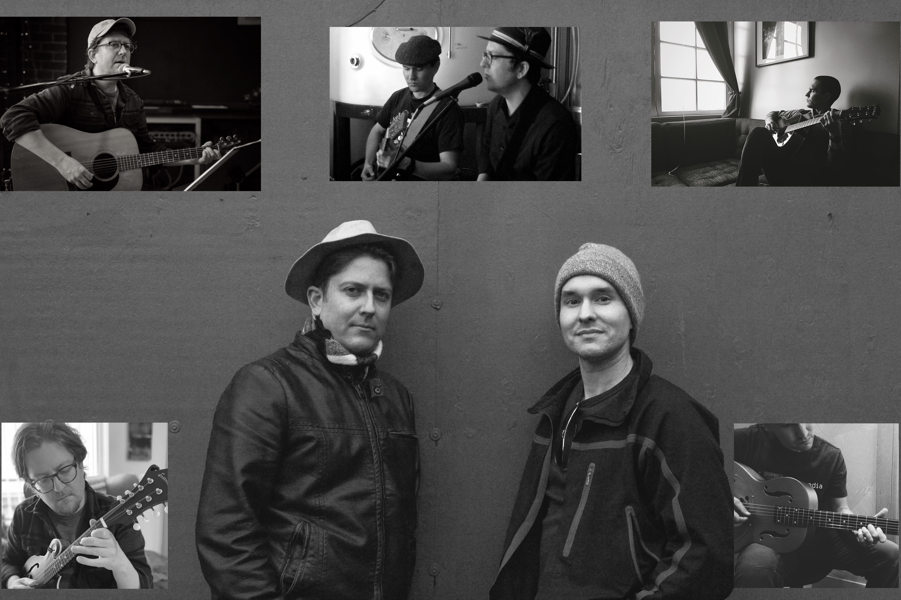

Redcedar
Earnest PNW Folk Rock
Redcedar is Jonny Morgan and Jonathan Shue, lifelong friends and devotees of the twentieth century singer-songwriter era.
With sparse arrangements, eclectic instruments, vocal harmonies, and lyrics borne from both classical literature and classic soul, Redcedar's music invites you in like a campfire underneath a harvest moon.
Contact us at redcedarsea at gmail dot com for booking and other inquiries.
Upcoming Redcedar shows
- December 10, 2022. Double Bluff Brewing, Langley WA
Upcoming Jonny Morgan solo shows
- January 18, 2023. Skein & Tipple, Clinton WA
- February 15, 2023. Skein & Tipple, Clinton WA
- February 18, 2023. Blooms Winery & Bistro, Freeland WA
- March 15, 2023. Skein & Tipple, Clinton WA
Past shows
- October 15, 2022. Blooms Winery & Bistro, Freeland WA
- October 8, 2022. Double Bluff Brewing, Langley WA
- September 14, 2022. Skein & Tipple, Clinton WA
- September 9, 2022. Bailey's Corner Store, Clinton WA